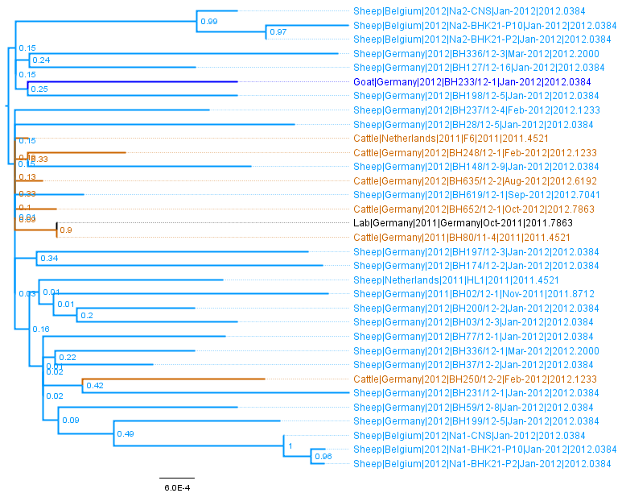
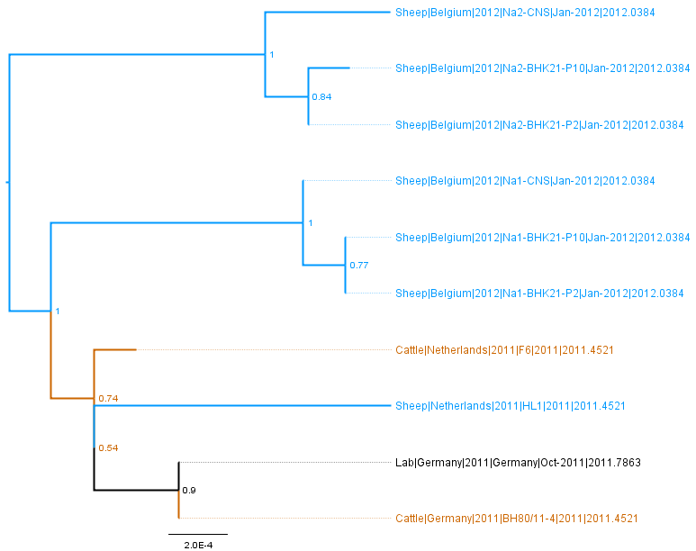

Schmallenberg Virus
Genome
The Schmallenberg Virus is an Orthobunyavirus with a segmented RNA genome, containing three segments:
S (small) - 1kb, M (medium) - 4.4kb, and L (large) - 6.7kb. The surface glycoproteins Gn and Gc are encoded on the M segment.
See http://viralzone.expasy.org/viralzone/all_by_species/250.html
Relationship to other viruses
The Schmallenberg Virus belongs to the Simbu serogroup, together with Shamonda and Sathuperi viruses.
It seems that reassortment has occurred between these strains, and the following papers investigate the relationships between them.
Saeed et al (2001) "Phylogeny of the Simbu serogroup of the genus Bunyavirus"
J Gen Virol. 2001;82:2173–81
PMID 11514727
Goller et al (2012) "Schmallenberg Virus as Possible Ancestor of Shamonda Virus" Emerg Infect Dis Oct 2012 18(10):1644–1646.
doi: 10.3201/eid1810.120835
Yanase et al (2012)
"Genetic reassortment between Sathuperi and Shamonda viruses of the genus Orthobunyavirus in nature: implications for their genetic relationship to Schmallenberg virus"
Arch Virol 157:8 pp 1611-1616
doi: 10.1007/s00705-012-1341-8
Sequences
Segments
Sequences from all segments were downloaded from GenBank on 28th May 2014. Initial processing to split the sequences into separate files according to segment was performed using a custom R script epic_process_background_seqs_schmallenberg_virus.R, followed by manual editting of the sequence files.
Nucleotide sequences (fasta format) were initially aligned manually and then translated to amino acids for alignment using MUSCLE in MEGA 5.
Neighbour joining trees (newick format) were created in MEGA with the TN93 model, pairwise deletetion, and heterogenous rates between sites and lineages.
Maximum likelihood trees (newick format) were also created in MEGA with the GTR model with site rate heterogeneity and 100 bootstraps
Table 1: Individual segments with GenBank accession numbers as names
| Segment | Length | Num.Seqs. | FASTA | NJ Tree | ML Tree |
| S | 841 | 33 | S segment | S NJ Tree | S ML Tree |
| M | 4434 | 33 | M segment | M NJ Tree | M ML Tree |
| L | 6682 | 10 | L segment | L NJ Tree | L ML Tree |
Table 2: Individual segments with names in format Host|Country|Year|Strain|Date|DecimalDate
| Segment | Length | Num.Seqs. | FASTA | NJ Tree | ML Tree | Strain Information |
| S | 841 | 33 | S segment | S NJ Tree | S ML Tree | S Information Table |
| M | 4434 | 33 | M segment | M NJ Tree | M ML Tree | M Information Table |
| L | 6682 | 10 | L segment | L NJ Tree | L ML Tree | L Information Table |
Figures: Maximum Likelihood trees (GTR + gamma distributed rates between sites, and 100 bootstraps) of the three segments.
Taxa are coloured according to host type, Sheep = pale blue, Goat = dark blue, Cattle = brown, Lab = black
Click to zoom.
| Segment S | Segment M | Segment L |

|  |  |
| S FigTree File | M FigTree File | L FigTree File |

{kind=link}
{kind=link}